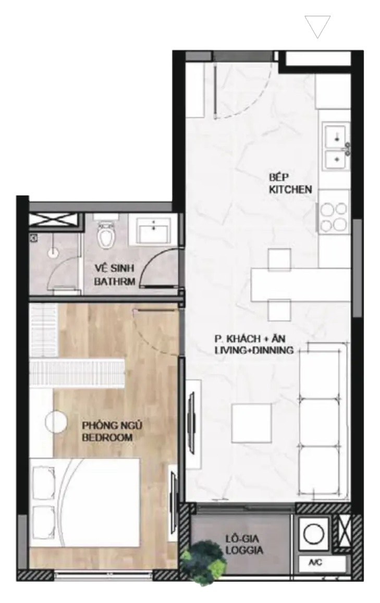
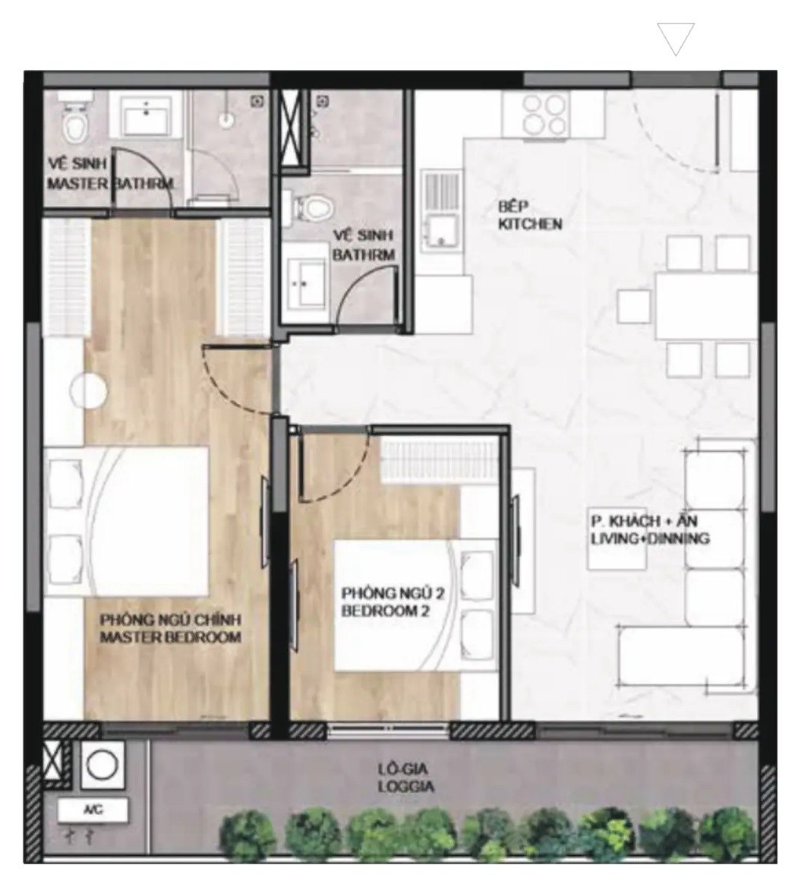
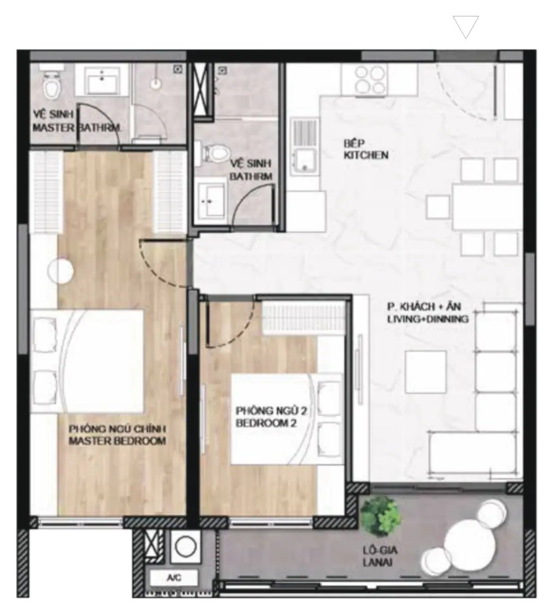
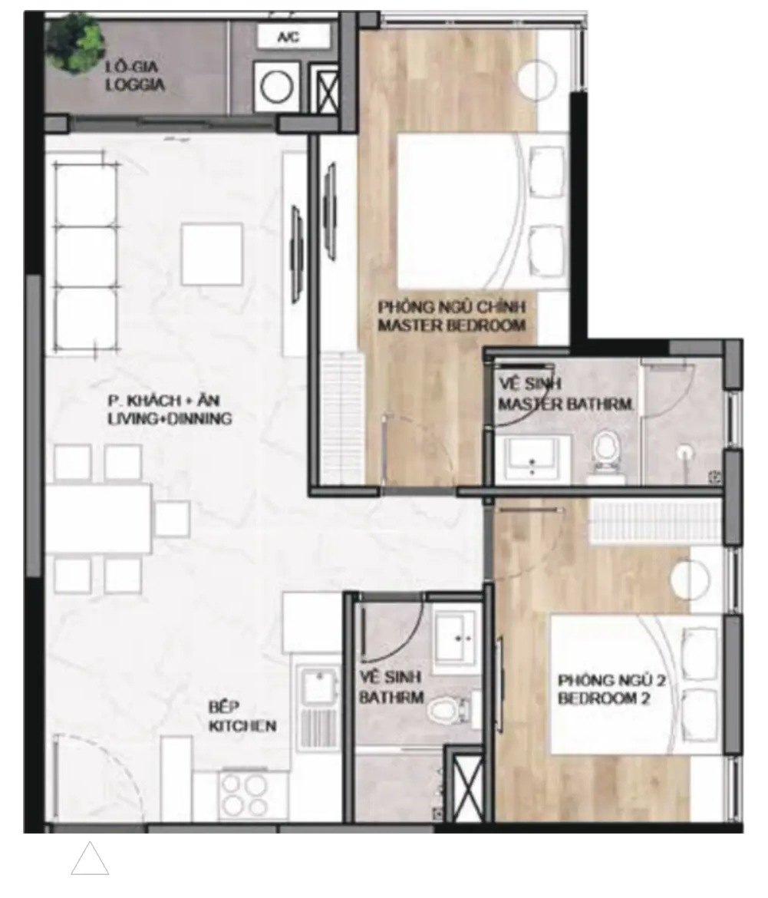
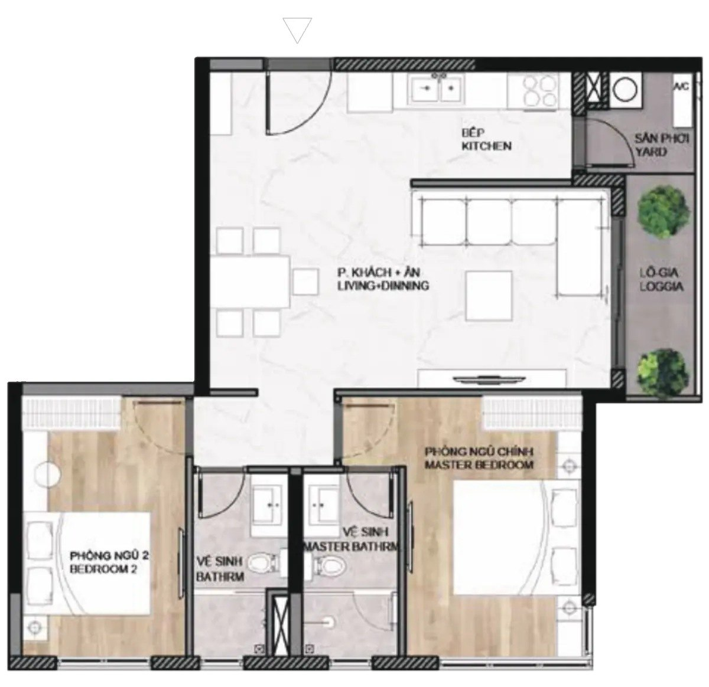
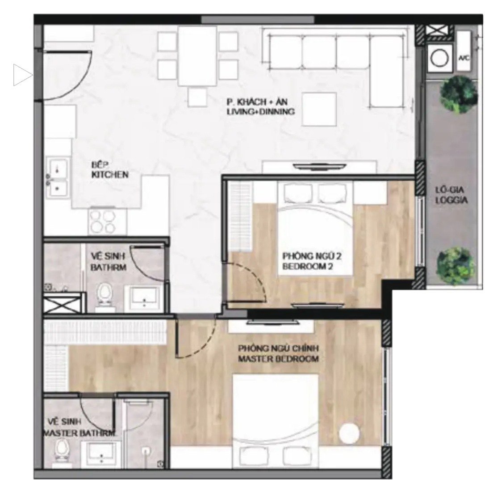
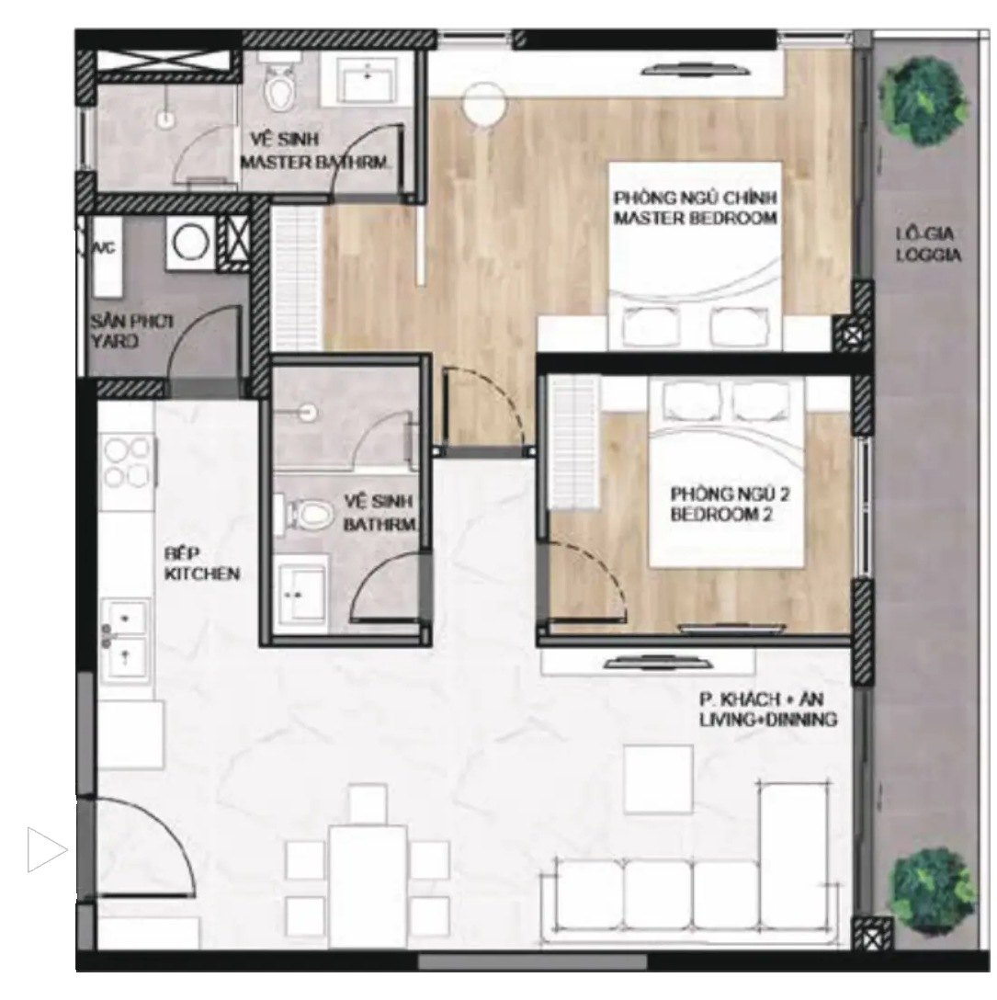
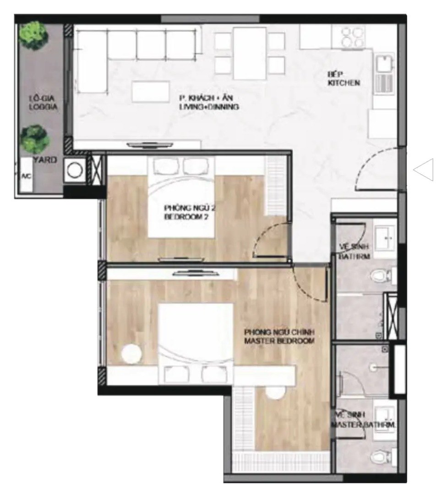
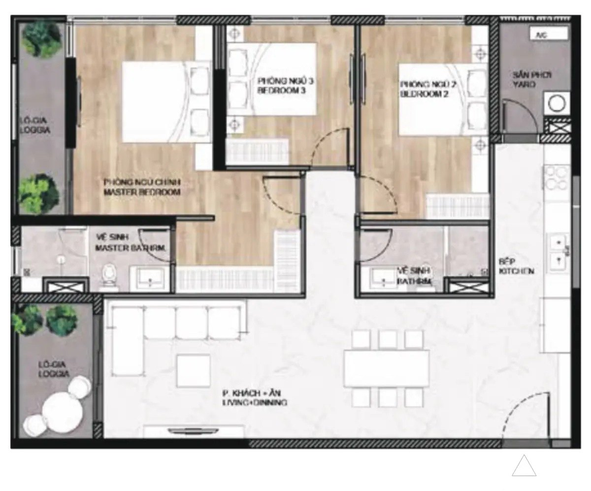

Elysian (Lò Lu, Thủ Đức): thông tin dự án và 12 mặt bằng căn hộ của Gamuda Land
1. Tóm tắt nhanh
Malaysia
A1 đến C3L
tùy đợt và nguồn
Elysian là dự án căn hộ của Gamuda Land (Malaysia) ở khu Lò Lu, phường Long Trường, TP. Thủ Đức. Trang chính thức công bố 12 mẫu căn hộ với hai cột diện tích: thông thủy và tim tường, nên bài này lấy trọn bảng chính thức và đặt mặt bằng từng mẫu cạnh con số tương ứng.
| Hạng mục | Thông tin |
|---|---|
| Tên dự án | Elysian |
| Chủ đầu tư | Gamuda Land (Malaysia) |
| Địa chỉ | Khu Lò Lu, TP. Thủ Đức (Quận 9 cũ), TP. Hồ Chí Minh |
| Loại căn | Studio, 1PN, 2PN, 3PN (12 mẫu: A1, A2, B1A, B1B, B1L, B2–B6, C1, C3L) |
| Phân khúc | High-end theo CBRE (báo cáo quý II/2026) |
| Bàn giao | Chưa có thông tin xác nhận trong bài; xem tiến độ trên trang chính thức |
| Giá tham khảo | Khoảng 49–72 triệu/m² tùy giai đoạn (mục 5) |
2. Vị trí
Elysian nằm ở khu Lò Lu, phía đông TP.HCM, thuộc khu vực Quận 9 cũ nay là TP. Thủ Đức. Các nguồn thị trường mô tả đây là khu vực căn hộ tầm trung đến cao cấp phía đông, gần các trục kết nối về Thủ Thiêm.
3. Sản phẩm
Trang chính thức Elysian công bố đầy đủ diện tích thông thủy và tim tường cho từng mẫu. Lưu ý một số nguồn gọi mẫu A1 là studio, còn trang chính thức ghi A1 là 1 phòng ngủ 1 WC; bài giữ cách ghi của trang chính thức.
| Loại / mã | Số PN | Tim tường (m²) | Thông thủy (m²) | Ghi chú |
|---|---|---|---|---|
| A1 | 1 | 36,9 | 33,4 | |
| A2 | 1 | 48,2 | 44,1 | |
| B1A | 2 | 82,4 | 76,8 | |
| B1B | 2 | 82,7 | 77,1 | |
| B1L | 2 | 80,1 | 74,5 | |
| B2 | 2 | 68,2 | 63,5 | |
| B3 | 2 | 77,3 | 71,7 | |
| B4 | 2 | 80,6 | 75,2 | |
| B5 | 2 | 88,7 | 81,7 | |
| B6 | 2 | 81,5 | 76,5 | |
| C1 | 3 | 100,3 | 94,0 | |
| C3L | 3 | 115,5 | 107,2 |
Căn hộ 1 phòng ngủ


Căn hộ 2 phòng ngủ








Căn hộ 3 phòng ngủ


4. Tiện ích và thiết kế
Elysian được giới thiệu với kiến trúc “biophilic” hòa cây xanh vào tòa nhà. Chi tiết tiện ích xem trang chính thức của dự án.
5. Giá tham khảo (gần đúng)
| Nguồn / loại căn | Mức giá | Ghi chú |
|---|---|---|
| Giá mở bán đợt 1 (một nguồn) | 49–57 triệu/m² | Studio từ 1,9 tỷ, 1PN từ 2,26 tỷ |
| Chủ đầu tư công bố trung bình | khoảng 68 triệu/m² | |
| Giá rao căn 1PN thứ cấp | 69–72 triệu/m² | Căn 52–53 m², giá rao |
Giá khởi điểm đợt đầu khoảng 49–57 triệu/m²; mặt bằng hiện nay quanh 60–72 triệu/m² theo giá rao. Đây không phải bảng giá chính thức.
6. Tiến độ và nguồn cung
- Tiến độ: chưa có thông tin xác nhận trong bài; xem trang chính thức.
- Chưa có thông tin chính thức trong bài: bảng giá hiện hành, số căn từng mẫu.
7. Kết luận
Elysian là dự án có bảng diện tích chính thức đầy đủ nhất trong nhóm dự án khu Đông. Khi so sánh, nên dùng diện tích thông thủy của đúng mẫu.